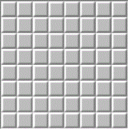
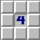

How to Play Minesweeper:

Start off by choosing one tile at random of the fully covered board. You have three options when deciding what to do with a specific tile. You can uncover the tile, mark it as a flag (a possible mine), or mark it as uncertain temporarily.
If you choose to uncover the tile, use the numbers on the tiles opened up to you to your advantage. The numbers that show up on the revealed tiles represent how many neighbors there are around that tile that are mines.

For example, if your tile shows the number 4, 4 of the adjecent 8 neighbors are mines.
Use logic and pattern recognition to uncover all the tiles that are NOT mines to win the game! For best results, try not to pick tiles at random, but take into account the numbers on the tiles and where the mines could be!